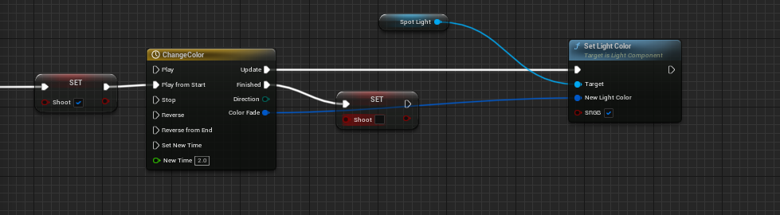
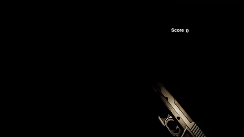

Critters is a VR horror game based on the Unreal Engine. The design of the game was to give the player the sense of as they make noise in the environment by shooting, the enemies will begin to move toward the player. I designed the mechanics around the idea of the only time you can see the map is when the player shoots which in turn creates a dynamic of needing to see the enemies but causes the enemies to move closer to the player in the process.
My goal for this project was to get a good grasp of blueprints along with learning the inner workings of the Unreal Engine. I wanted to impart the feeling to the player that they were towing a line between making too much noise but also killing the nearest enemies that the gun has attracted. To achieve the gun’s shooting effect where it reveals what’s in front of the player I utilized a spotlight along with a timeline to achieve a fading-out effect.
 I also decided to link this effect to the enemy’s move to player AI so as the light fades out the enemies will begin walking in a different direction utilizing a navmesh to ensure that they will not be in predictable locations for the player.While developing the player and enemy interactions, it became prevalent that there needed to be some kind of sound effect that the player distinguishes direction and a rough distance on where the enemies should be. To achieve this, I had to import the oculus audio plugin and create an attenuation that will utilize the oculus’s dynamic sound that the plugin provides.
I wanted to push myself by making a horror-style VR game, two things that I have not done before. As for the challenges, the project itself was one big challenge. I needed to learn how to make a landscape to immerse the players while also ensuring the navmesh is properly working. Being that it is a VR game I had to learn how to better optimize the foliage I placed on the map to archive the desired fps. This project helped strengthen my skills and gave me a more concrete understanding of how Unreal's blueprint system works. I had to interact with base variable manipulation to complex enemy navigation by player interaction and the skills I learned form this project will allow me to tackle more complex projects in the future.